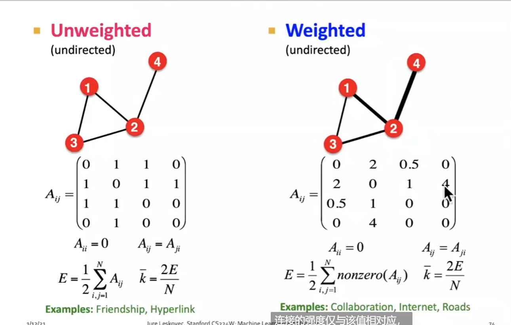
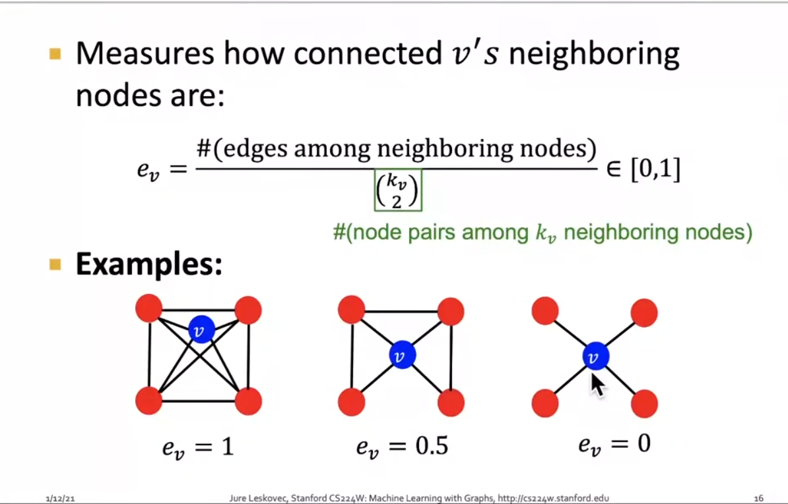
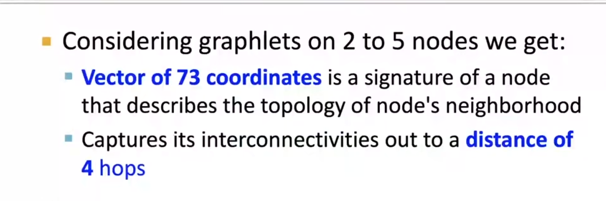
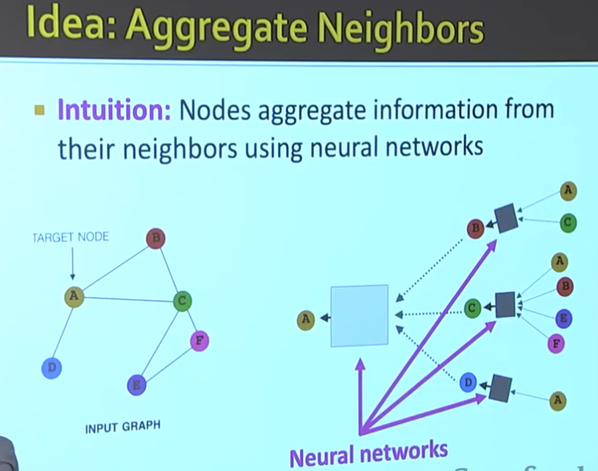
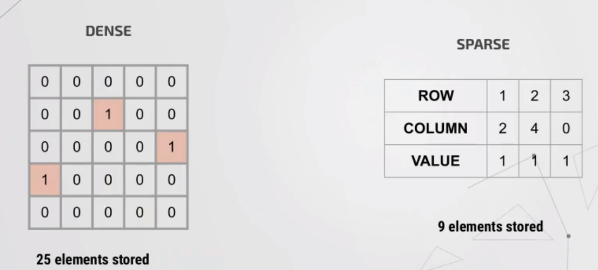

Machine Learning with Graphs
This course focuses on the computational, algorithmic, and modeling challenges specific to the analysis of massive graphs. By means of studying the underlying graph structure and its features, students are introduced to machine learning techniques and data mining tools apt to reveal insights on a variety of networks.
1. Intro
1.2 Application
不同尺度： - 整图尺度：整个图的预测和生成 - 子图尺度 - 节点尺度 - 边尺度 点预测：预测某一个点的特征 边预测：预测两点之间是否有连边（知识图谱） 图分类：分子属性预测 子图检测：检测是否有点构成子图，社区发现 其他类型： 图生成：比如生成具有特定属性的新分子结构 图演化：来模拟物理现象
Example of Node-level ML Tasks
问题：给定一个氨基酸序列，是否可以预测其可能构成的蛋白质空间结构？ 重点进步是，AlphaFold提出了spatial graph，并把氨基酸表示成了spatial graph。 node：氨基酸 edge：表示氨基酸之间的空间距离关系
Examples of Edge-level ML Tasks
We are basically doing link prediction or trying to understand the relationship between different nodes.
Recommender Systems Using a bipartite graph creates a much more powerful embedding than just using images. Nodes: User and items Edges: User-item interactions Goal: predict future edges
Drug Side Effects Prediction Task: Given a pair of drugs, predict adverse side effects. To deal with this, create a two-level heterogeneous network using known protein-protein interactions and drug-protein interactions to predict unknown drug-drug side effects. >Inspiration for the Global Rigidity Recovery (GRR) Problem: >We can also model the GRR Problem as an edge prediction task: predict a set of edges that, if we move some drones to establish them, the graph would be global rigidity; meanwhile, this process consumes the least power. ### Examples of Graph-level ML Tasks Drug Discovery Model this problem as a graph classification problem. Alternatively, we can also model it as a graph generation problem. Note that we can also optimize the existing graph to have desirable properties. >Inspiration for the Global Rigidity Recovery Problem: > Optimize the existing "Broken Graph" to have Global Rigidity properties.
Simulation Learning Framework  Ieteratily generation next
frame position and update the current position. >Inspiration for the
Global Rigidity Recovery Problem): >This work uses a time sequence
model to predict the effect of gravity. Similarly, we can assume a
virtual force keeps the graph converging to global rigidity and uses
some analogous model to predict the effect of this force.
Ieteratily generation next
frame position and update the current position. >Inspiration for the
Global Rigidity Recovery Problem): >This work uses a time sequence
model to predict the effect of gravity. Similarly, we can assume a
virtual force keeps the graph converging to global rigidity and uses
some analogous model to predict the effect of this force.
1.3 Choice of Graph Representation
Undirected graph: use undirected links to represent symmetrical or reciprocal relations. Directed graph: use directed links to represent arcs relation.
Bipartite Graph 二分图
Folded/Projected Bipartite Graph
Use one of the side nodes in a bipartite graph, and project it by
some rules, such as they have at least one common neighbor. Helpful when
it has two types of nodes: author and papers, movie and customers. 
weighted graphs
 ### more types of graphs
Connectivity
Different meanings of connectivity in undirected graph and directed graph.
2. Feature Design
2.1 Node features
There are some traditional node features. ### Node degree Node degree
is a fundamental but essential feature of graph nodes. However, the
drawback of using it to characterize the structure and position of a
node is that it treats all the neighbors equally; for example,
nodes with the same degree are distinguishable even
though they may be in different parts of the network. 
Node Centrality
Node degree counts the neighboring nodes without capturing their importance. So we introduce the Node centrality to overcome this drawback. Node centrality takes the node importance in a graph into account. Different types of Node centrality: - Engienvector centrality - Betweenness centrality - Closeness centrality - and many others... #### Eigenvector centrality
Betweenness centrality
The idea is that if a node is an important connector, then it has high importance.
Closeness centrality
The idea is that the more centered a node is, the shorter the path to everyone else is and the more important it is.
Clustering Coefficient
This measures the density of neighbors of a node. The numerator is how many edges exist in neighbors. The denominator is how many edges it could maximally have.
 Observation from the Clustering coefficient: The clustering coefficient actually counts the triangles in the ego network.
Graphlets 异构连通子图
Different node color means different structure features. #### Graphlet Degree Vector(GDV) Now define Graphlet Degree Vector(GDV) Take an example of how to calculate Graphlets. a-d represents different types of Graphlets, and different node colors represent different positions. GDV simply counts all the cases when node v respectively in each position of every possible Graphlets. So if we consider neighbors of 4 hops, we got a GDV of 73 elements.  Conclusion: - GDV captures fine-grained topological properties of the local neighborhood around a node. - Useful for predicting the role of a particular node in the network. E.g., predicting protein function. >Inspiration for the Global Rigidity Recovery Problem): >- Embedding GDV features in node to represent local topology structure features.
Summary of 2.1 Node features
Summary of
Importance-based Features Summary of Structure-based features: Captures the
topological properties of the local neighborhood around the node. Useful
for predicting the role of a particular node in the network. E.g.,
predicting protein function. ## 2.2 Edge features Edge features = Features for a
pair of nodes Two
pipelines of Link prediction task: - Links are missing at random: used
mainly in a static network like protein prediction. - Links over time:
used mainly in a dynamic network.  ### Methodology of link prediction Computing score
between each pair of nodes.
### Methodology of link prediction Computing score
between each pair of nodes.
Three types edge features
#### 3.1 Distance-based features #### 3.2 Local Neighborhood Overlap
......
How
GNN的两种技术路线 ^8a2f39 1. 用邻居更新——Spatial 2. 转化到新的域——Spectral
图谱卷积
参考文献
- https://blog.csdn.net/sinat_41667427/article/details/106160643?spm=1001.2014.3001.5502 这篇讲拉普拉斯矩阵那块讲的特别清楚
- 然后这篇 https://blog.csdn.net/yilulvxing/article/details/110308247 的最后那一部分，把卷积运算迁移到了图上，讲的很清楚
Conv
Spatial-Based: Aggregate
在图里如何类比Conv提取信息⬆️。其中紫色线指的Neural Networks必须是order invariant（顺序不变）的，which means交换Neural Networks的输入节点的顺序，不影响结果。
问题：那A不就相当于汇聚了多次？（不重复，因为每次都是利用前一时刻的A）
"image-20210316132241742" style="zoom:50%;" />
每个节点都相当于定义了一个图。
what’s in the box
How to train
"image-20210316150709662" style="zoom:50%;" />
在生成的子图上面进行训练。
然后可以在没见过的子图上进行前向predict（得益于权值共享）。前向predict在如图的子图上就是从下到上的方向。
权值共享。权值的数量和网络的大小无关，而只和你的深度有关 。
"image-20210316151022526" style="zoom:50%;" />
区分两种“深度”
在box内部放着的神经网络，有他自己的“深度”，这个深度你肯定想多深就多深。
但是整个子图的“深度”，这个是不能太深的（比如社交网络，仅仅几层深度就能访问到很大的一片图了）。这个 深度表示的是“你要向多少邻居借信息”。
GAT
GNN综述
拓扑特征提取
Pytorch geometry
Custom Dataset
Base concepts
A single graph in PyG is described by an instance of
torch_geometric.data.Data, which holds the follwing
attributes by default: (None of those are required.) -
data.x: Node feature matrix with shape
[num_nodes, num_node_features] -
data.edge_index: Graph connectivity in COO format with shape
[2, num_edges]. - data.edge_attr: Edge
features matrix with shape [num_edges, num_edge_features].
- data.y: Target to train against (may have arbitrary
shape), targets of node-level tasks of shape [num_nodes, *]
or targets of graph-level tasks of shape [1, *]. -
data.pos: Node position matrix with shape
[num_nodes, num_dimensions]. 
Mini-batching
Concepts of different kind of Batch stuffs.
The method of mini-batch is crucial for the project which needs to train on amount of data. Instead of tranning examples one-by-one, a mini-batch groups a set of examples into a unified representation where it can effciently be processed in parallel.
In CV and NLP, this generally be done by rescalling or padding each
example into same size, and then group them in an additional dimension.
The length of this additional dimension is equal to the numbers of
examples grouped in this mini-batch, and is typically referred to as the
batch_sized.
Since graphs are generally contains different numbers of nodes and edges, so above approaches to do mini-batching are either not feasible or may result in a lot of unnecessary memory consumption. In Pytorch Geometry, the mini-batch was done by folloing ways: - Adjacency matrices are stacked in a diagonal fashion (creating a giant graph that holds multiple isolated subgraphs) - Node features are concatenated in the node dimension. - Target features are concatenated in the node dimension. \[ \mathbf{A}=\left[\begin{array}{ccc} \mathbf{A}_1 & & \\ & \ddots & \\ & & \mathbf{A}_n \end{array}\right], \quad \mathbf{X}=\left[\begin{array}{c} \mathbf{X}_1 \\ \vdots \\ \mathbf{X}_n \end{array}\right], \quad \mathbf{Y}=\left[\begin{array}{c} \mathbf{Y}_1 \\ \vdots \\ \mathbf{Y}_n \end{array}\right] \] > here A is adjency matrices, X is node features, Y is target features.
train with mini-batch
transforms
Colab notebooks
Machine Learning with Graphs